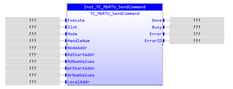
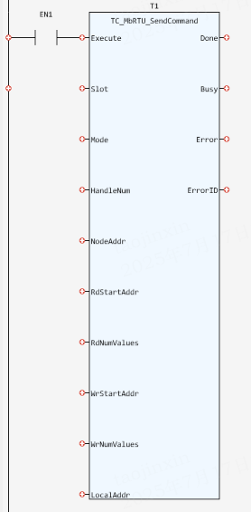

System Function.
Execute the given Modbus function if the connection is open.
|
Execute: BOOL; |
Rising edge requests execution |
|
Slot: INT; |
Slot number. Currently, the default value is -1. If it is not -1, an error will be reported |
|
Mode: TC_MODBUSRTU_MODE; |
Modbus function mode, including tcRdCoils, tcRdDiscreteInputs, tcRdHoldingRegs, tcRdInputRegs, tcWrCoils, tcWrRegs |
|
HandleNum: DINT; |
The connection handle output by TC_MbRTU_OpenConnection |
|
NodeAddr: DINT; |
Node Address, ranging from 1 to 247 |
|
RdStartAddr: DINT; |
Modbus start address when reading data |
|
RdNumValues: DINT; |
Number of Modbus addresses when reading data |
|
WrStartAddr: DINT; |
Modbus start address when writing data |
|
WrNumValues: DINT; |
Number of Modbus addresses when writing data |
|
LocalAddr: DINT; |
The target VR start address in the Motion Coordinator client |
|
TRUE when function has completed normally |
|
|
Busy: DINT; |
The FB is not finished and new output values are to be expected. |
|
Error: BOOL; |
TRUE if a program error is detected |
|
ErrorID: UINT; |
Returned error number |
When the Execute input changes from FALSE to TRUE, the Function Block issues a command to execute the given Modbus function if the connection is open. ErrorID includes 781, 784, 787, 788, 789, 792, 793, 795, 796, 797, 798 and 799, and the corresponding error descriptions are as follows.
|
ErrorID |
Description |
|
781 |
Slot error |
|
788 |
Modbus address error |
|
789 |
VR address error |
|
792 |
HandleNum error |
|
784, 787, 793, 795, 796, 797, 798 |
Function execution internal error |
|
799 |
Modbus function mode error |
Inst_TC_MbRTU_SendCommand(Execute:= (BOOL), Slot:= (INT), Mode:= (TC_MODBUSRTU_MODE), HandleNum:= (DINT), NodeAddr:= (DINT), RdStartAddr:= (DINT), RdNumValues:= (DINT), WrStartAddr:= (DINT), WrNumValues:= (DINT), LocalAddr:= (DINT));
(BOOL):=Inst_TC_MbRTU_SendCommand.Done;
(BOOL):=Inst_TC_MbRTU_SendCommand.Busy;
(BOOL):=Inst_TC_MbRTU_SendCommand.Error;
(UINT):=Inst_TC_MbRTU_SendCommand.ErrorID;


Not available.